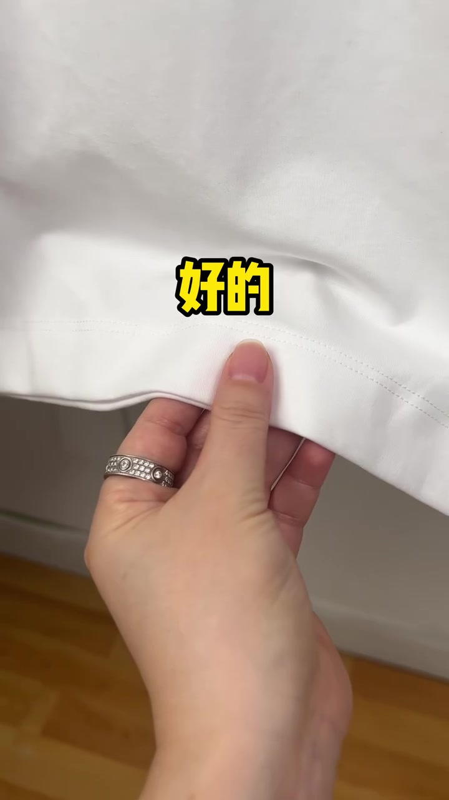
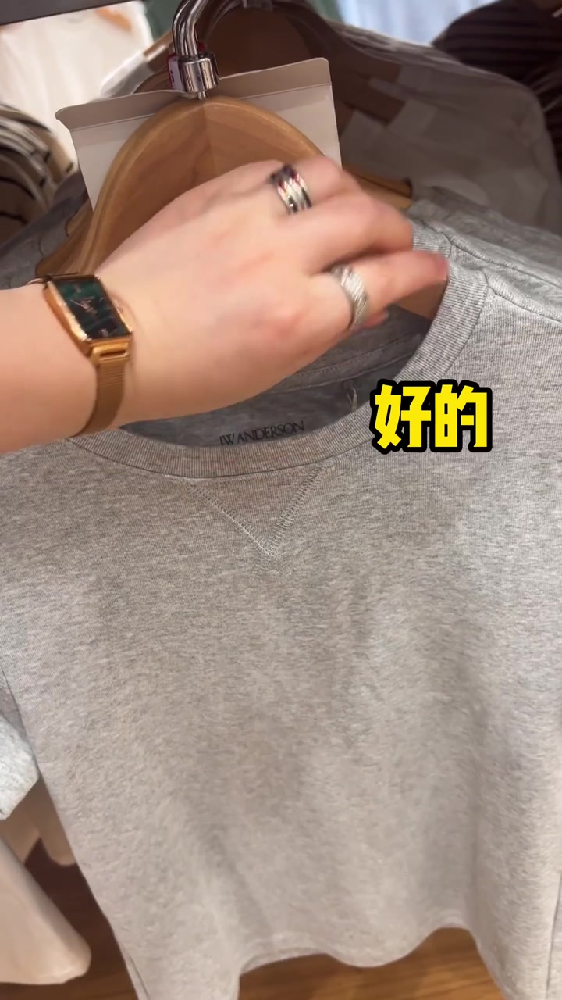
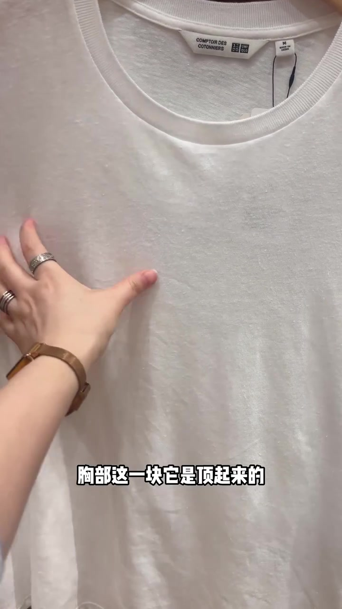
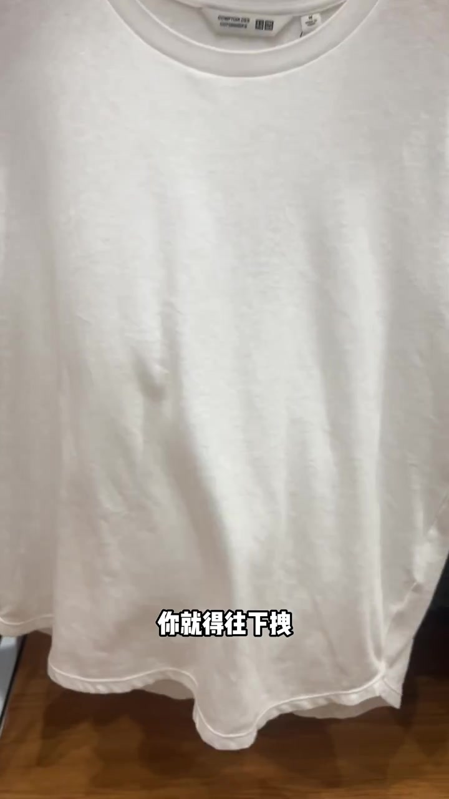
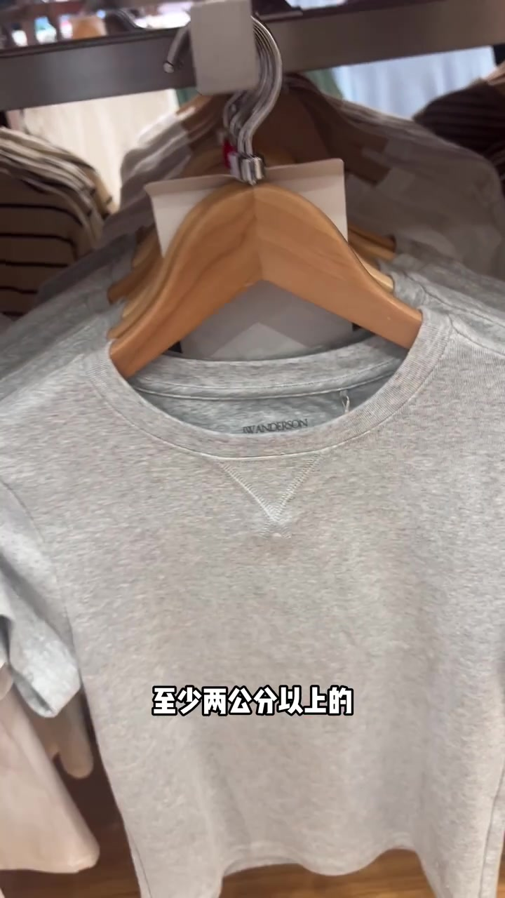
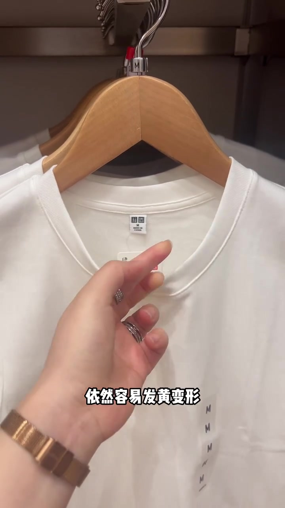
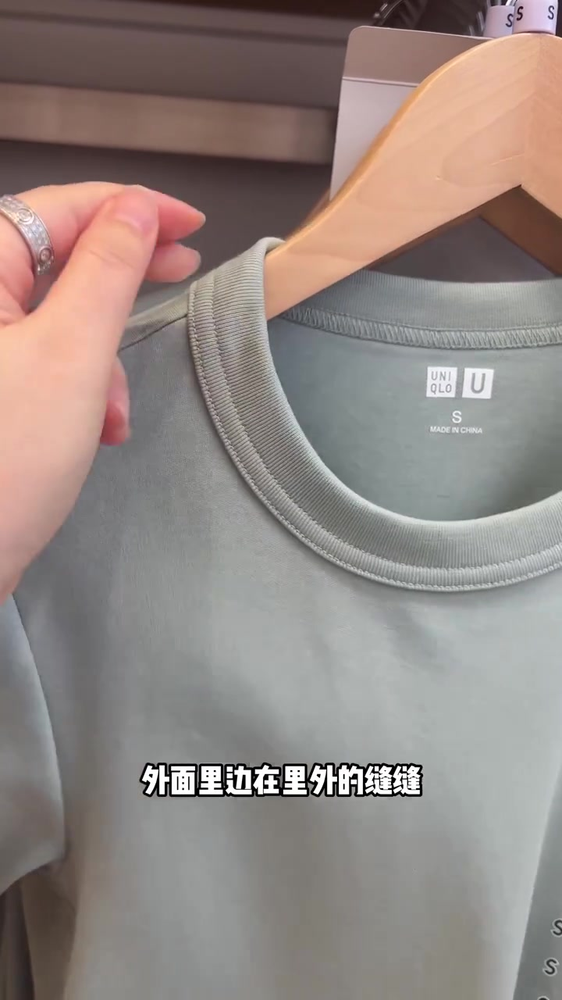
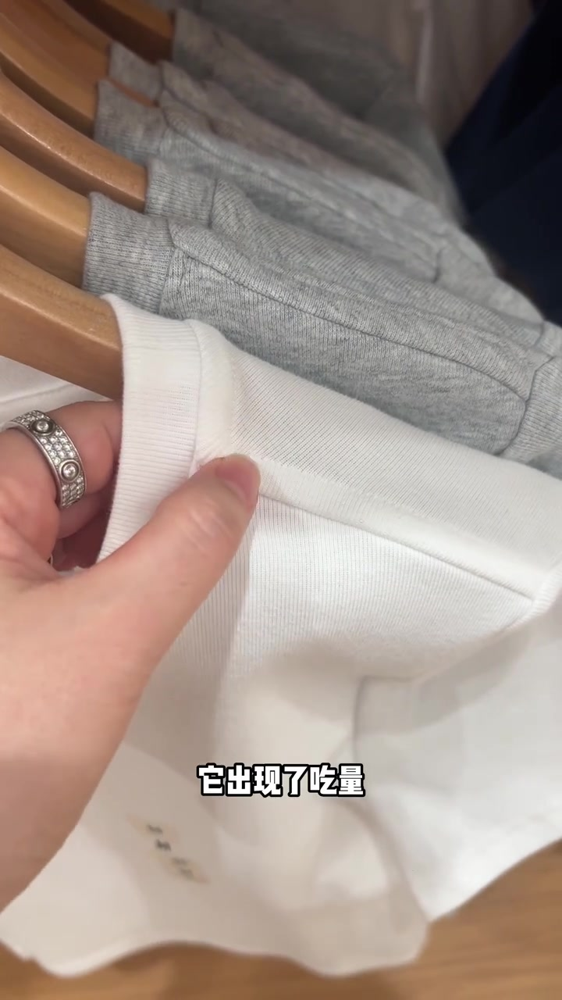

开场：先用“差的 / 好的”把标准钉在画面上
视频一上来不讲品牌故事，而是把手伸到衣摆和胸前，交替打出“差的”和“好的”大字，告诉观众：衣服好坏可以靠一眼能看见的做工细节分辨。
标签与话题也指向买衣技巧：干货分享、买衣服不花冤枉钱、细节决定品质。整条片子的任务很明确——在店里快速验货，而不是做长篇品牌测评。


女生 T 恤：千万别选前短后长
字幕先落在“女生 T 恤，千万不要去选这种前短后长的”。镜头贴近一件白色联名圆领衫，主讲人捏住胸部区域，说明上身后这里会被顶起来，前面变得更短还翘，领口往后跑，容易卡脖子；下摆那一块还得往下拽。
可见字幕校正：Whisper 把“更短还翘”听成“更转还翘”，“往下拽”听成“往下转”，“容易卡脖子”听成“弄一卡脖子”。下文按画面字幕叙述，文末转录区仍保留原始分段。


领口横开：用手掌量，至少多出两公分
话题转到领子：想要久穿球领不变形，就去选领横开更大的款。标准很具体——搭自己的手掌，至少多出两公分以上，穿脱才不容易被撑变形。
反例也同步给出：领横开如果正好一掌，或者小于一掌，即便领圈螺纹再好，穿脱次数多了，依然容易发黄变形。画面里主讲人把整只手掌横在领口上，当作随身尺子。
字幕校正：Whisper 将“久穿球领不变形”听成“九川球系不变形”，“小于一掌”听成“小女一掌”，“发黄变形”听成“发好面积”。


溜肩或脖子粗：这种厚领圈别考虑
镜头切到一件偏厚的绿色系圆领衫。字幕点名溜肩、脖子比较粗的女生，这种领圈就别考虑了：领圈太厚，再加上里外缝份与多层面料，上下左右叠起来，只会显得脖子更粗、肩更溜。
这段不是泛泛吐槽“厚领不好看”，而是把结构层数和显瘦/显粗的视觉结果绑在一起。

通肩拉条：拐角宽窄不匀，穿上会鼓包
收尾落到做工细节：但凡带这种通肩拉条的衣服，拉条拐角这块一定要从正面看做工。若一看就有宽有窄，不只是线走歪了，而是拐角出现了吃量；穿上身后，这个拐角其实会有一个小凸起鼓包。
字幕校正：Whisper 把“通肩拉条”听成“通间拉条”，“吃量”听成“质量”，结尾“小凸起鼓包”听成“小凸起 / 会包的”。叙述依可见字幕，转录区保留原样。

55 秒里，主讲人没有展开面料成分或价格对比，而是把“一眼能查”的动作留给观众：看衣长前后差、量领口、摸领圈厚度、正视拉条拐角。